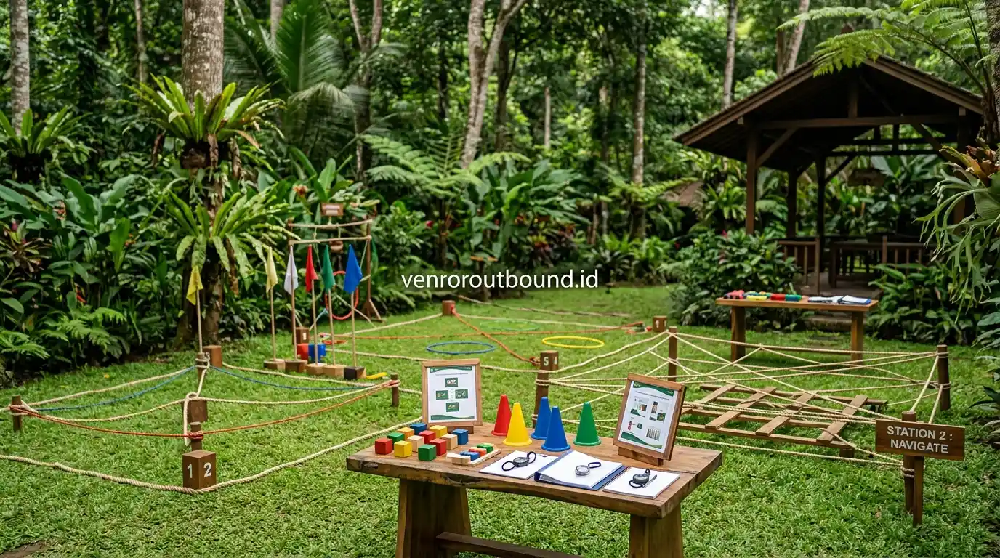

1. Mengapa Komunikasi Menjadi Fondasi Utama Kinerja Tim?
Jawaban singkat: Miskomunikasi dalam tim kerja dapat menjadi salah satu faktor yang menghambat produktivitas perusahaan. Melalui simulasi outbound team building, karyawan dapat dilatih untuk mendengarkan secara aktif, menyampaikan informasi dengan jelas, memahami peran anggota lain, dan bekerja sama dalam menyelesaikan tantangan. Kegiatan seperti ini dapat menjadi media pembelajaran yang lebih praktis untuk mengevaluasi pola komunikasi tim.
Di balik setiap target bisnis yang tercapai, selalu ada rantai koordinasi yang berjalan mulus antarindividu. Namun, ketika saluran komunikasi internal tersumbat—baik karena perbedaan persepsi, ego sektoral antar divisi, maupun keengganan menyampaikan kendala sejak dini—kinerja operasional organisasi dapat terganggu secara signifikan.
Bagi jajaran pimpinan perusahaan, CEO, dan praktisi HR, penurunan produktivitas sering kali disalahartikan semata-mata sebagai penurunan motivasi individu. Padahal, dalam banyak kasus, akar masalahnya terletak pada pola interaksi tim yang kurang sehat. Informasi yang terdistorsi di tengah jalan tidak hanya membuang waktu dan energi kerja, tetapi juga berujung pada kekecewaan klien atau pelanggan akhir.

5 Kesalahan Fatal Team Building Kantor yang Sering Terjadi
Panduan menghindari kegiatan yang sekadar seru-seruan tanpa memberikan dampak pada budaya kerja tim.
2. Enam Gejala Miskomunikasi yang Menggerus Efisiensi Kerja
Miskomunikasi sering kali tidak tampak seperti konflik terbuka, melainkan muncul dalam bentuk friksi kecil harian yang berulang:
- Pekerjaan Berulang (*Rework*): Karyawan harus mengulang tugas karena instruksi awal tidak dipahami secara utuh atau terdapat perubahan data yang tidak terdistribusi.
- Keterlambatan Deadline Lintas Divisi: Proyek tersendat karena satu departemen menunggu dokumen dari departemen lain tanpa kepastian linimasa.
- Asumsi Sepihak Menggantikan Konfirmasi: Anggota tim mengambil keputusan berdasarkan dugaan pribadi daripada memverifikasi langsung kepada pihak terkait.
- Munculnya Budaya Menyalahkan (*Blame Culture*): Ketika terjadi kekeliruan, energi tim habis untuk mencari siapa yang salah dibanding mencari solusi bersama.
- Silo Mentality Antardepartemen: Divisi membatasi akses informasi dan hanya memprioritaskan target unit masing-masing tanpa peduli tujuan besar perusahaan.
- Penurunan Kepuasan Pelanggan: Inkonsistensi janji layanan atau kesalahan produk akibat miskoordinasi internal yang akhirnya dirasakan langsung oleh konsumen.

Pos simulasi komunikasi terstruktur di mana peserta belajar menyampaikan instruksi terarah dan mendengar aktif.
3. Mengapa Rapat Formal di Kantor Kerap Belum Menuntaskan Masalah?
Banyak organisasi berusaha menyelesaikan kendala komunikasi dengan menambah frekuensi rapat formal. Meskipun rapat penting untuk koordinasi manajerial, ruangan kantor sering kali mempertahankan hierarki jabatan yang kaku. Karyawan junior mungkin merasa canggung untuk mengemukakan keberatan, sementara atasan terkadang mendominasi alur pembicaraan.
Di sinilah pendekatan pembelajaran berbasis pengalaman (*experiential learning*) melalui kegiatan luar ruang memberikan nilai tambah yang unik. Di lapangan alam bebas, sekat hierarki formal melebur secara alami dalam suasana santai dan kolaboratif.

Kumpulan Game Outbound Kreatif untuk Mencairkan Suasana Kerja
Pilihan dinamika simulasi luar ruang yang dirancang khusus untuk membangun kerja sama dan empati tim.
4. Bagaimana Simulasi Outbound Team Building Membentuk Pola Komunikasi Baru?
Dalam program outbound team building, peserta dihadapkan pada skenario tantangan fisik atau logika sederhana yang sengaja dibuat sulit diselesaikan tanpa koordinasi yang rapi:
A. Melatih Mendengarkan Aktif (*Active Listening*)
Simulasi permainan dengan pembatasan visual atau sensorik mengharuskan peserta benar-benar menyimak instruksi rekan tanpa memotong pembicaraan.
B. Menyampaikan Pesan Singkat & Presisi
Dalam batas waktu permainan yang ketat, peserta belajar menyaring informasi penting dan menghindari kalimat ambigu yang membingungkan anggota tim lainnya.
C. Debriefing: Mengaitkan Refleksi Game dengan Realita Kantor
Fasilitator memandu sesi diskusi seusai simulasi: mengapa tim sempat gagal, siapa yang merasa tidak didengar, dan bagaimana strategi tersebut diterapkan pada alur kerja sehari-hari di kantor.

Cara Ampuh Menghilangkan Kejenuhan Karyawan Setelah Rilis Projek Besar
Strategi pemulihan energi dan semangat kolaborasi tim setelah melewati fase kerja intensif.
5. Langkah Lanjutan Pasca-Kegiatan untuk Menjaga Dampak Positif
Kegiatan outbound bukanlah obat instan yang bekerja secara otomatis. Agar perubahan perilaku bertahan lama, manajemen HR disarankan merumuskan tindak lanjut konkret, seperti menyederhanakan protokol komunikasi antardepartemen, mengadakan evaluasi berkala yang inklusif, serta memberikan apresiasi pada keterbukaan ide antaranggota tim.
Sembuhkan Kendala Komunikasi Antar Divisi di Kantor Anda
Diskusikan kebutuhan program outbound team building perusahaan Anda bersama fasilitator kami via WhatsApp di +62 82211221909 untuk merancang simulasi yang tepat sasaran.
Hubungi Kami via WhatsApp6. Kesimpulan
Komunikasi yang sehat adalah pelumas utama efisiensi kerja dan pendorong tercapainya target bisnis perusahaan. Memperbaiki pola komunikasi yang kaku melalui simulasi outbound team building memberikan ruang belajar yang menyenangkan, aman, dan aplikatif bagi seluruh jajaran karyawan untuk saling memahami dan melangkah bersama dengan ritme yang selaras.
Pertanyaan Sering Diajukan (FAQ)

Arby Ardiansyah
Arby Ardiansyah merupakan praktisi dan penyusun konten edukasi di Vendor Outbound, berfokus pada topik pengembangan tim, komunikasi organisasi, employee engagement, dan dinamika pembelajaran experiential learning di alam terbuka.